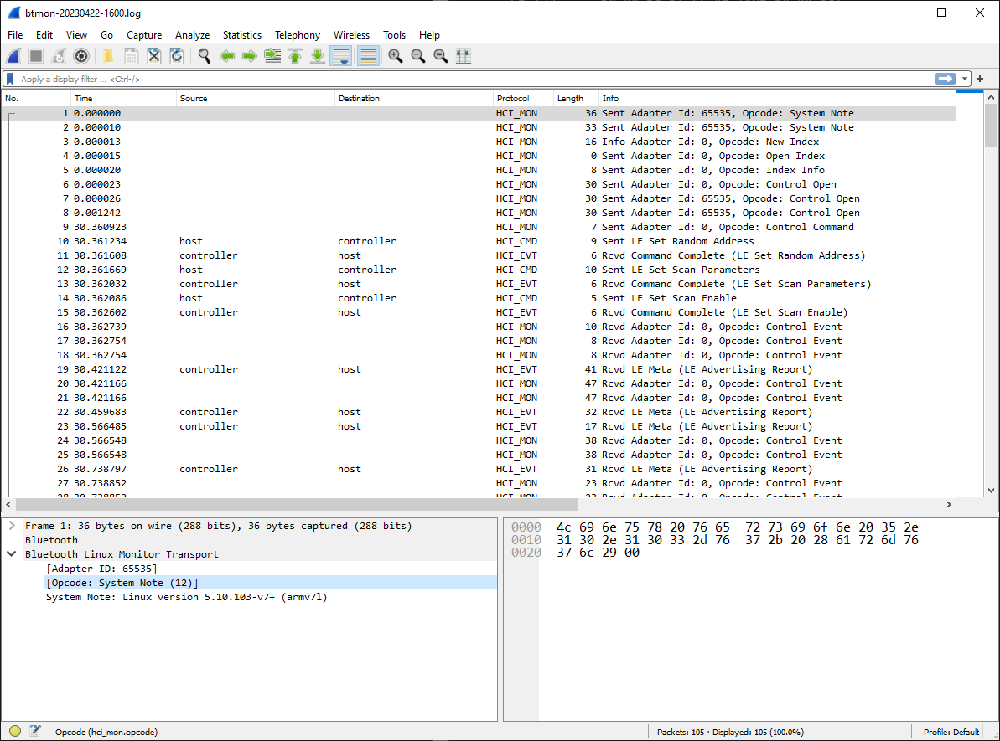

Sniffing Bluetooth Low Energy packets on Linux
This post explains how to capture Bluetooth Low Energy packets using Open Source tools.
Prerequisites
- A host acting as BLE central with the following characteristics:
- OS: a recent Debian or Ubuntu distribution (tested on a Raspberry Pi 3B+ running Raspberry Pi OS bullseye)
- Package
bluez-utilsinstalled - A Bluetooth Low Energy adapter supported by the Linux host (tested with the on-board Bluetooth interface of the Raspberry Pi)
- Wireshark installed either on the Linux host or on another machine (in this case the OS may also be Windows or macOS)
Step-by-step instructions
Launch btmon on the host acting as BLE central. In our example, open a terminal on the Raspberry Pi and type the following command:
sudo btmon -w btmon-$(date '+%Y%m%d-%H%M').log
This command will create a timestamped file, for instance btmon-20230422-1600.log.
The format of the file is similar to
Android btsnoop_hci.log.
Now open another terminal and interact with the BLE device of interest.
For instance, launch bluetoothctl
bluetoothctl
and type the following commands:
scan on
scan off
connect D0:99:BC:DA:66:9F
connect D0:99:BC:DA:66:9F
exit
Result:
pi@rpi3pgm29:~ $ bluetoothctl
Agent registered
[bluetooth]# scan on
Discovery started
[CHG] Controller B8:27:EB:A3:CA:84 Discovering: yes
[NEW] Device 32:EA:0A:94:14:46 32-EA-0A-94-14-46
[NEW] Device 4B:D7:0C:ED:9A:9F 4B-D7-0C-ED-9A-9F
[CHG] Device D0:99:BC:DA:66:9F RSSI: -47
[NEW] Device 6A:E5:9A:F9:9C:39 6A-E5-9A-F9-9C-39
[NEW] Device 67:58:28:56:38:79 67-58-28-56-38-79
[NEW] Device 3C:CA:D2:50:9A:9B 3C-CA-D2-50-9A-9B
[NEW] Device 67:28:E6:A6:14:58 67-28-E6-A6-14-58
[CHG] Device DE:13:06:8D:1A:5D RSSI: -44
[NEW] Device 4D:BC:5D:4F:7C:4E 4D-BC-5D-4F-7C-4E
[NEW] Device 4F:63:A0:CC:4E:12 4F-63-A0-CC-4E-12
[bluetooth]# scan off
Discovery stopped
[CHG] Controller B8:27:EB:A3:CA:84 Discovering: no
[CHG] Device 4F:63:A0:CC:4E:12 TxPower is nil
[CHG] Device 4F:63:A0:CC:4E:12 RSSI is nil
[CHG] Device 4D:BC:5D:4F:7C:4E TxPower is nil
[CHG] Device 4D:BC:5D:4F:7C:4E RSSI is nil
[CHG] Device DE:13:06:8D:1A:5D RSSI is nil
[CHG] Device 67:28:E6:A6:14:58 TxPower is nil
[CHG] Device 67:28:E6:A6:14:58 RSSI is nil
[CHG] Device 3C:CA:D2:50:9A:9B RSSI is nil
[CHG] Device 67:58:28:56:38:79 RSSI is nil
[CHG] Device 6A:E5:9A:F9:9C:39 TxPower is nil
[CHG] Device 6A:E5:9A:F9:9C:39 RSSI is nil
[CHG] Device D0:99:BC:DA:66:9F RSSI is nil
[CHG] Device 4B:D7:0C:ED:9A:9F TxPower is nil
[CHG] Device 4B:D7:0C:ED:9A:9F RSSI is nil
[CHG] Device 32:EA:0A:94:14:46 RSSI is nil
[bluetooth]# connect D0:99:BC:DA:66:9F
Attempting to connect to D0:99:BC:DA:66:9F
[CHG] Device D0:99:BC:DA:66:9F Connected: yes
Failed to connect: org.bluez.Error.Failed
[CHG] Device D0:99:BC:DA:66:9F Connected: no
[bluetooth]# connect D0:99:BC:DA:66:9F
Attempting to connect to D0:99:BC:DA:66:9F
[CHG] Device D0:99:BC:DA:66:9F Connected: yes
Failed to connect: org.bluez.Error.Failed
[CHG] Device D0:99:BC:DA:66:9F Connected: no
[bluetooth]# exit
pi@rpi3pgm29:~ $
The messages exchanged between the Bluetooth host (i.e. the Raspberry Pi) and the Bluetooth controller will be logged on the terminal where you executed the btmon command.
When you are satisfied with the results, type ^C to stop btmon and look at the btsnoop file that has been created:
pi@rpi3pgm29:~ $ ls -la btmon-20230422-1600.log
-rw-r--r-- 1 root root 4690 Apr 22 16:02 btmon-20230422-1600.log
pi@rpi3pgm29:~ $
In our case the Raspberry Pi has no display, so we need to download file btmon-20230422-1600.log from a PC where we have Wireshark installed.
gmaca@alpha MINGW64 ~/Downloads
$ scp rpi3pgm29:btmon-20230422-1600.log .
btmon-20230422-1600.log 100% 4690 339.5KB/s 00:00
gmaca@alpha MINGW64 ~/Downloads
$
You may now open the file from Wireshark:

You may apply some display filters, for instance btatt (Bluetooth Attribute Protocol)
Wireshark: Analyze > Display Filters...
- Filter:
btatt